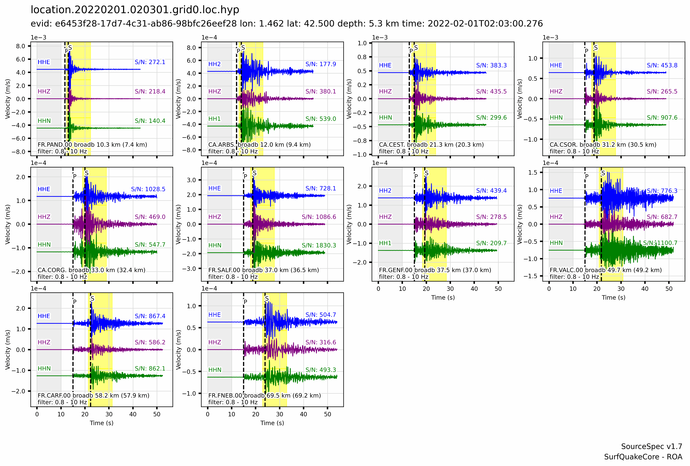
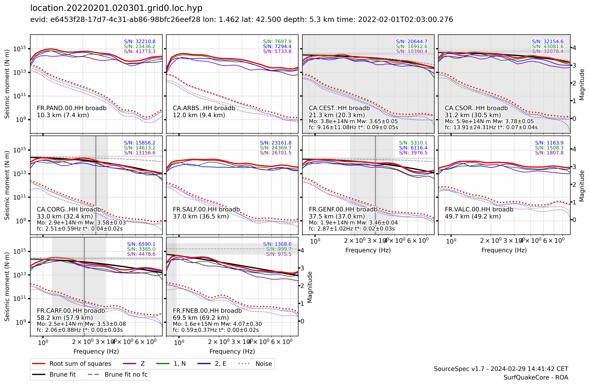
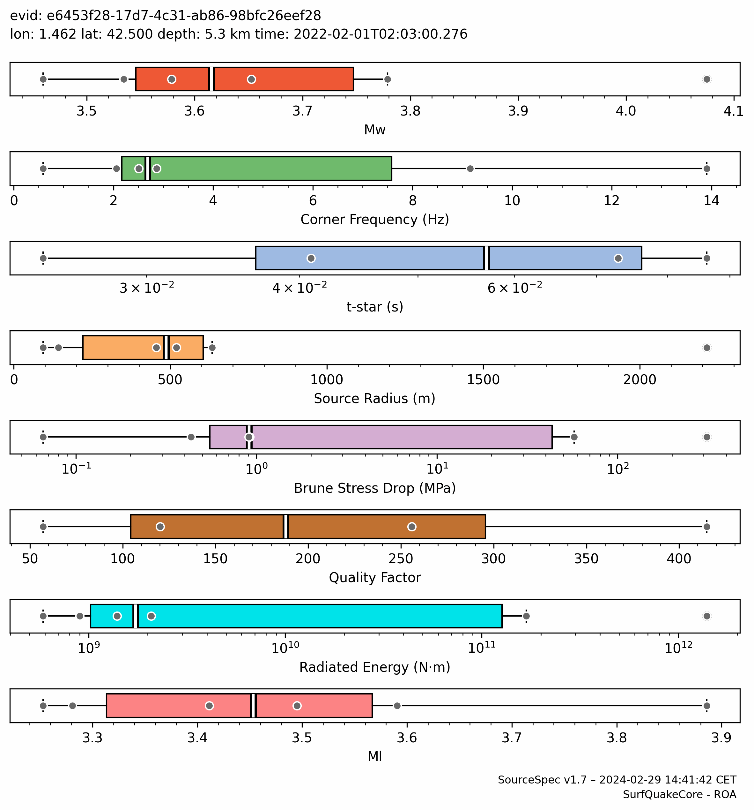
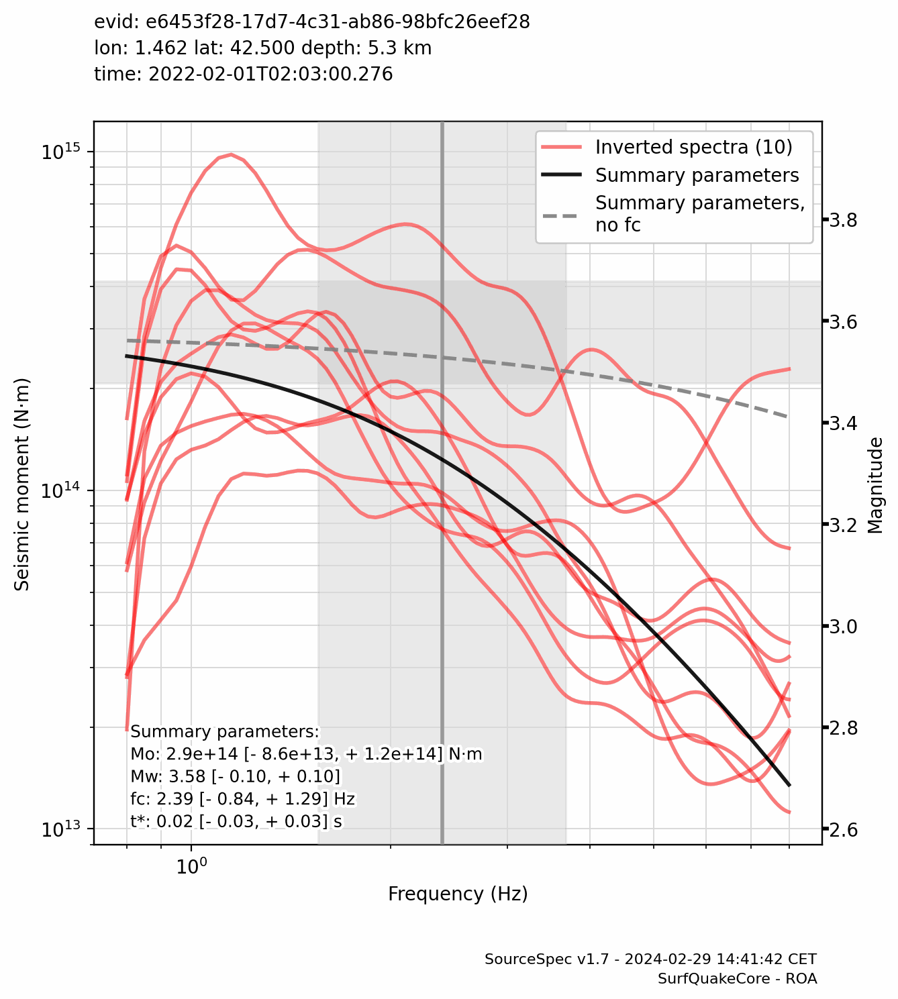

Event Summary
| Event ID: | e6453f28-17d7-4c31-ab86-98bfc26eef28 |
|---|---|
| Longitude: | 1.462 °E |
| Latitude: | 42.500 °N |
| Depth: | 5.3 km |
| Origin Time: | 2022-02-01T02:03:00.276594Z |
| Moment Magnitude: | 3.58 [- 0.10, + 0.10] |
| Corner Frequency: | 2.392 [- 0.836, + 1.286] Hz |
Traces

Spectra

Inversion Information
| Algorithm: | Truncated Newton |
|---|---|
| Weighting: | Noise weighting |
| t-star-0: | 0.045 s |
| Invert t-star-0: | False |
| t-star-0 variability: | 10.0 % |
| t-star min, max: | [0.0, 0.1] s |
| fc min, max: | - |
| Qo min, max: | - |
Summary Spectral Parameters
Note: the highlighted column indicates the reference parameters used for Event Summary and Map Plots.
| Mean (1 sigma) |
Weighted Mean (1 sigma) |
Percentiles (50%, [15.9%, 84.1%]) |
|
|---|---|---|---|
| Mw | 3.60 ±0.11 |
3.58 ±0.10 |
3.58 -0.07 +0.12 |
| Seismic Moment (N·m) | 3.170e+14 -9.937e+13 +1.447e+14 |
2.932e+14 -8.584e+13 +1.214e+14 |
2.936e+14 -6.245e+13 +1.610e+14 |
| Corner Frequency (Hz) | 3.218 -2.072 +5.817 |
2.392 -0.836 +1.286 |
2.688 -0.931 +7.442 |
| t-star (s) | 0.037 ±0.033 |
0.023 ±0.026 |
0.033 -0.033 +0.043 |
| Qo | 212.0 ±137.4 |
83.8 ±54.3 |
188.0 -100.8 +151.0 |
| Source Radius (m) | 288.432 -154.356 +332.060 |
503.006 -106.679 +135.394 |
454.707 -330.055 +106.238 |
| Brune Stress Drop (MPa) | 1.064e+00 -9.476e-01 +8.677e+00 |
7.931e-01 -4.208e-01 +8.962e-01 |
9.058e-01 -6.058e-01 +2.061e+01 |
| Radiated Energy (N·m) | 3.034e+09 -2.644e+09 +2.058e+10 |
1.393e+09 -6.077e+08 +6.117e+10 |
|
| Ml | 3.49 ±0.21 |
3.45 -0.18 +0.20 |
Spectral Parameter Box Plots

Stacked Spectra

Station Parameters
Note: outliers are greyed out
|
|
|
|
Frequency (Hz) |
(s) |
|
Moment (N·m) |
stress drop (MPa) |
radius (m) |
Energy (N·m) |
Distance (km) |
(°) |
|
|---|---|---|---|---|---|---|---|---|---|---|---|---|
| CA.CEST..HHH | broadb | |||||||||||
| CA.CORG..HHH | broadb | |||||||||||
| CA.CSOR..HHH | broadb | |||||||||||
| FR.CARF.00.HHH | broadb | |||||||||||
| FR.FNEB.00.HHH | broadb | |||||||||||
| FR.GENF.00.HHH | broadb |
Files
| Configuration: | e6453f28-17d7-4c31-ab86-98bfc26eef28.ssp.conf |
|---|---|
| Output: | e6453f28-17d7-4c31-ab86-98bfc26eef28.ssp.yaml |
| Log: | e6453f28-17d7-4c31-ab86-98bfc26eef28.ssp.log |